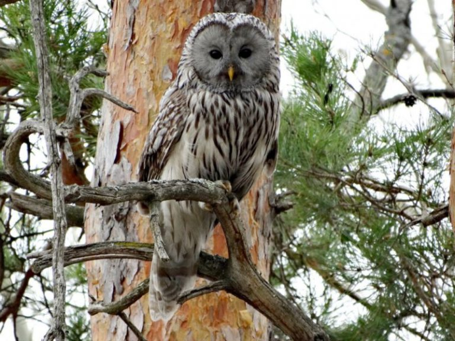
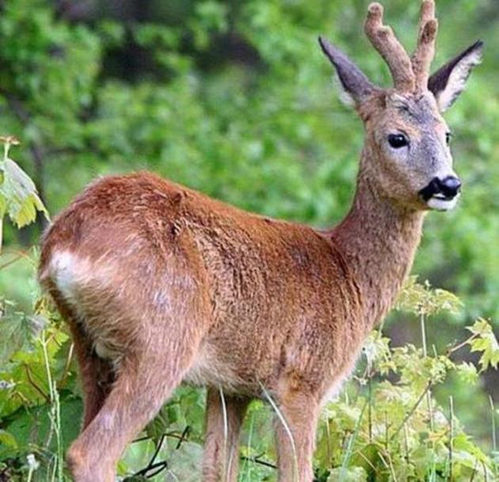
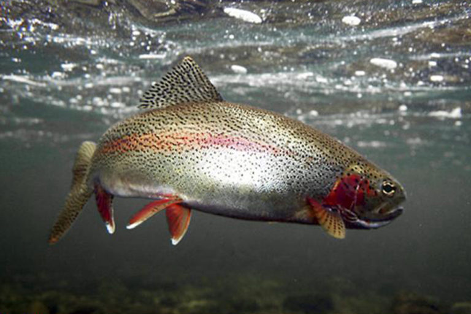
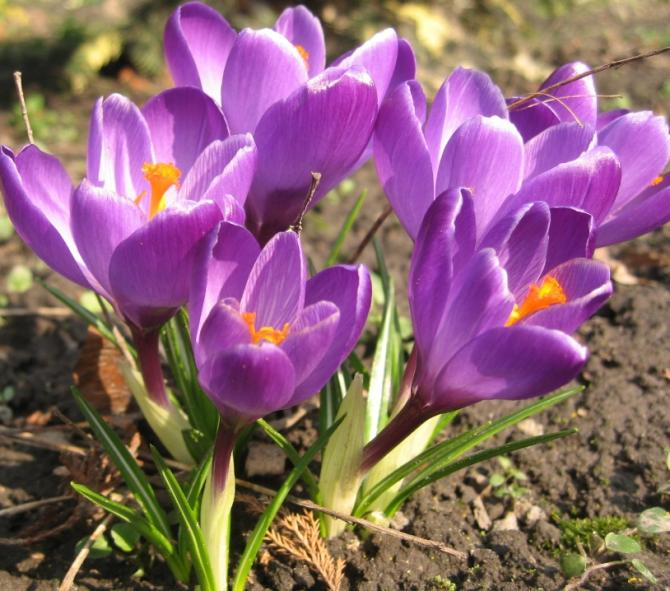

Всі, хто хоч раз побував на Закарпатті, визнають, що мало де в Європі знайдеться такий край, який би порівнявся із ним по кількості і якості озеленення території. Власне, ліси нашого регіону займають площу близько до 500.000 га, що складає 45 % його території. Кожна пора року в Українських Карпатах чарує своїми особливими барвами та красою, адже самобутній зелений дивосвіт Українських Карпат найбагатший у флористичному відношенні регіон України (налічує більше 2000 видів рослин).
Поряд із місцевими породами наш край прикрашає і численна екзотична флора. На сьогодні на Закарпатті нараховується понад 300 видів таких рослин. З ранньої весни до пізньої осені цвітіння одних змінюється іншими. Здається, що Карпати розчиняються у квітучих деревах та кущах. Це такі оригінальні рослини, як кущі форзицій золотистої та зеленуватої, ніжно-рожеві квіти японської айви та рожеві — яблуні Недзвецького, криваво-червоні квіти яблуні флоридської та білі — яблуні китайської, бутони рожевих квітів сакури японської, біляві та червонуваті квітучі пагони каштанів. А ще кипарисовики, гімалайські сосни, дугласії, самшит вічнозелений, скумпія звичайна (“парикове дерево”), катальпа бузколиста (“сигарне дерево”), павлонія пухнаста (“адамове дерево”). “ЧЕРВОНА КНИГА” ФЛОРИ ЗАКАРПАТТЯ нараховує біля 300 видів рослин.
За своїм багатством не відстає від рослинного різномаїття і тваринний світ нашого краю. Тут проживають 80 видiв ссавцiв, 280 видів птахiв, 10 видів плазунiв, 16 видів земноводних, 60 видів риб, 100 видів молюскiв. Особливо поширені на Закарпатті кріт, лисиця, вовк, єнотовидний собака, борсук, куниця, ласка, горностай, тхір, видра, лісовий кіт, рись, заєць, білка, ондатра, дикий кабан, козуля, карпатський олень. Серед птахів слід назвати глухаря, тетерева, рябчика, фазана, сіру куріпку, перепела, горлицю, голуба, лиску, деркача, чайку, вальдшнепа, дятла, сову, лелеку, дрозда. З плазунів поширені степова черепаха, ящірки, вуж, веретільниця, гадюка звичайна (до речі, єдина отруйна змія Карпат), саламандра, мідянка. У річках Закарпаття водиться майже половина усіх прісноводних риб України: форель струмкова, лосось дунайський, харiус, андруга, малий чоп, умбра, бабець, гірчак, пiдуст, мiнога угорська, марена, головень, сом, щука, плітка, карась, лин.
Риби карпатських водойм, як видно, надзвичайно різноманітні. Це зумовлене своєрідним рельєфом, географічним положенням та багатьма іншими особливостями даної території. Природні і штучні водойми Українських Карпат займають велику площу — понад 40 тис. га. Довжина річок і струмків перевищує 10 тис. км. Багато тут і ставків та різних водосховищ.Особливої уваги вимагають комахи і метелики Закарпаття, занесені до Червоної Книги. Тут живе найбільший нічний метелик Європи. Метелика сатурнію велику – червонокнижного представника родини Павиноочки дослідники знайшли на узліссях Ужанського парку. Науковці мали змогу спостерігати за Saturnia pyri у період з травня до червня. До речі, попри те, що це нічний вид, самців можна було зустріти і вдень. А крилатий справді гідний статусу ” найбільшого у Європі нічного метелика”– розмах крил самця сягає 120 мм, самки – 150 мм. Лише з рідкісних представників ентомофауна тут проживає 56 видів, які входять до червоних списків фауни України, Карпат, Міжнародних конвенцій. На Закарпатті є також чимало історичних парків-памяток. Зокрема, вони розташовані у В. Березному (парк ХIХ ст.), Ужгороді (парки Лаудона і Підзамковий), Мукачеві (парк із 140 екзотичними деревами i кущами), Буштині (парк XVIII ст.).
№ п/п Українська назва виду Природоохоронний статус Латинська назва виду Тип
Загалом є 168 видів тварин занесених до Червоної книги України